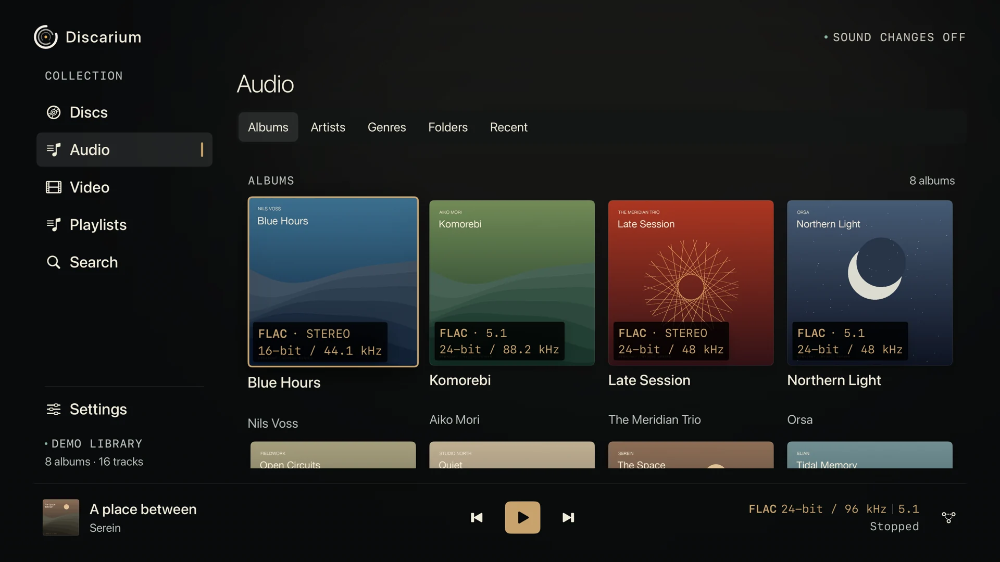

01DISCS
More than a movie file.
Open supported Blu-ray and DVD copies directly, as folders or ISO images. Browse programs, chapters and audio tracks, with compatible original menus controlled by your remote.
Explore disc supportDISCS. MUSIC. CINEMA.
The albums you love. The concerts you keep.
The films worth sitting down for.
Lossless audio, original-quality video and the disc experience, brought together on Apple TV. Built for music lovers, audiophiles and the system you’ve made your own.
Apple TV · tvOS 27 or later

ONE COLLECTION. THREE WAYS IN.
A dedicated home for your discs, music and videos.
No catalogue to
rent. No subscription to your own collection.
Open supported Blu-ray and DVD copies directly, as folders or ISO images. Browse programs, chapters and audio tracks, with compatible original menus controlled by your remote.
Explore disc supportLossless albums, high-resolution recordings and discrete surround sound. From FLAC to multichannel PCM, with gapless playback between compatible tracks.
Explore audio formatsYour films and concerts in their original resolution, without app-side re-encoding. Supported 4K and HDR10, subtitle choices, embedded chapters and a place to pick up where you left off.
Explore video supportPUT YOUR DISCS CENTRE STAGE
The opening menu. The concert. The encore.
Discarium plays supported disc copies directly on Apple TV, including compatible Blu-ray HDMV and DVD-Video menus. Choose a program, find a chapter or switch the soundtrack, all from your sofa.
See the sound versions and disc size before you start. Save a supported disc locally when you want to leave the network out of the evening.
Original Blu-ray HDMV and DVD-Video menus. Explore supported formats
DESIGNED FOR THE SOFA
Big artwork. Clear controls. Gentle visualizations.
Hide the
interface and let the music fill the room.
MADE FOR YOUR HI-FI
Lossless audio. Video without additional lossy re-encoding by the app. Keep an eye on the codec, resolution, sample rate and channel layout, with the detailed view a click away.
High-resolution source support goes up to 24-bit/192 kHz. Sound details compares the recording with the output reported by Apple TV, so a format change is visible.
Understand the outputNAS · Network drive · Local downloads
Decode, play and show the details
Connected over HDMI
The final audio and picture output depends on tvOS, your Apple TV and the connected equipment.
Connect SMB network drives and UPnP/DLNA media servers. Keep settings out of the way while you browse your collections.
Playlists, tags, ratings and notes. Subtitle settings, audio choices and video resume. An interface in six languages.
Save albums and supported disc copies without conversion. Follow speed and time remaining, pause and resume, or remove a download.

MAKE YOURSELF AT HOME
Bring your music, concerts and discs to Apple TV.
Made for your
collection and the system you love.